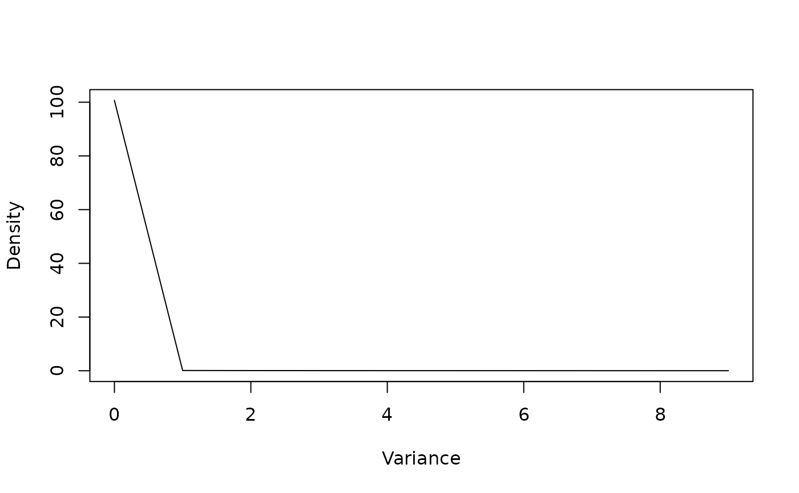
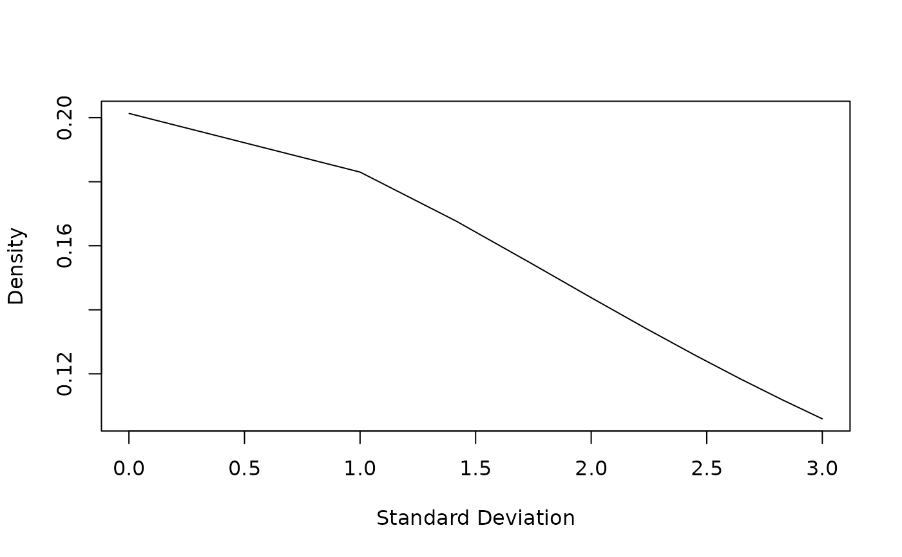

Prior Density of Variance or Standard Deviation
dprior.RdPrior density of variance or standard deviation as specified in a MCMCglmm prior
Details
If alpha.V is zero (or NULL) the density for the variance is a scalar inverse-Wishart (i.e. inverse-gamma) distribution. If alpha.V is non-zero MCMCglmm uses parameter expansion and the density for the variance is a scaled non-central F distribution with the numerator degrees of freedom equal to one. The density for the standard deviation is a folded scaled non-central t distribution.
Author
Jarrod Hadfield j.hadfield@ed.ac.uk
Examples
prior<-list(V=1, nu=1, alpha.mu=0, alpha.V=10)
# parameter expanded prior
x<-seq(1e-6, 10, lenhth=100)
#> Warning: In seq.default(1e-06, 10, lenhth = 100) :
#> extra argument ‘lenhth’ will be disregarded
plot(dprior(x, prior)~x, type="l", xlab="Variance", ylab="Density")

# Density for variance: central F_{1,1} with scale 10
plot(dprior(sqrt(x), prior, sd=TRUE)~sqrt(x), type="l", xlab="Standard Deviation", ylab="Density")

# Density for standard deviation: half-Cauchy (t_1) with scale sqrt(10)